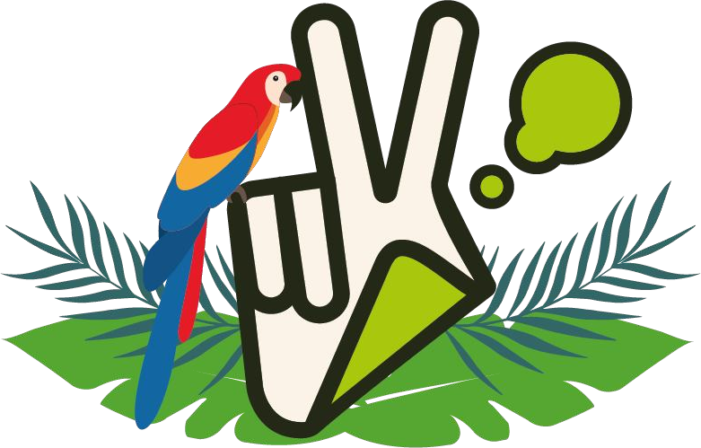
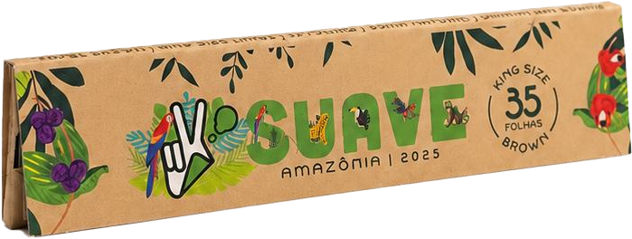
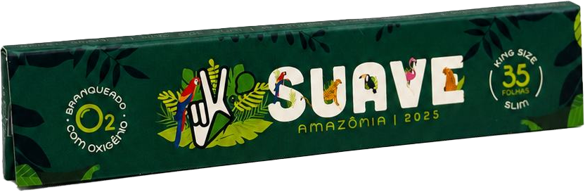
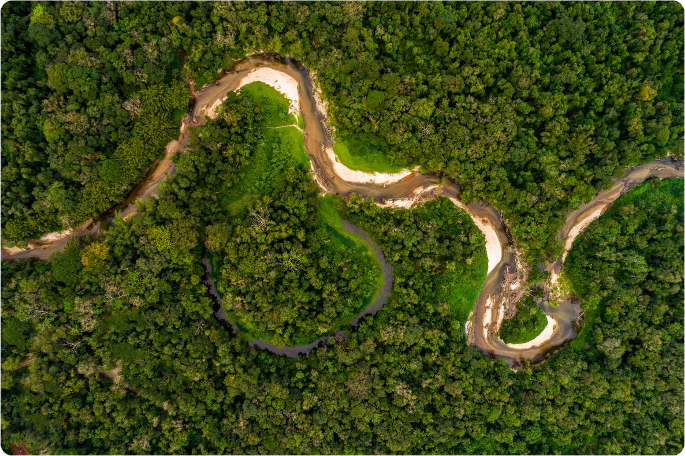
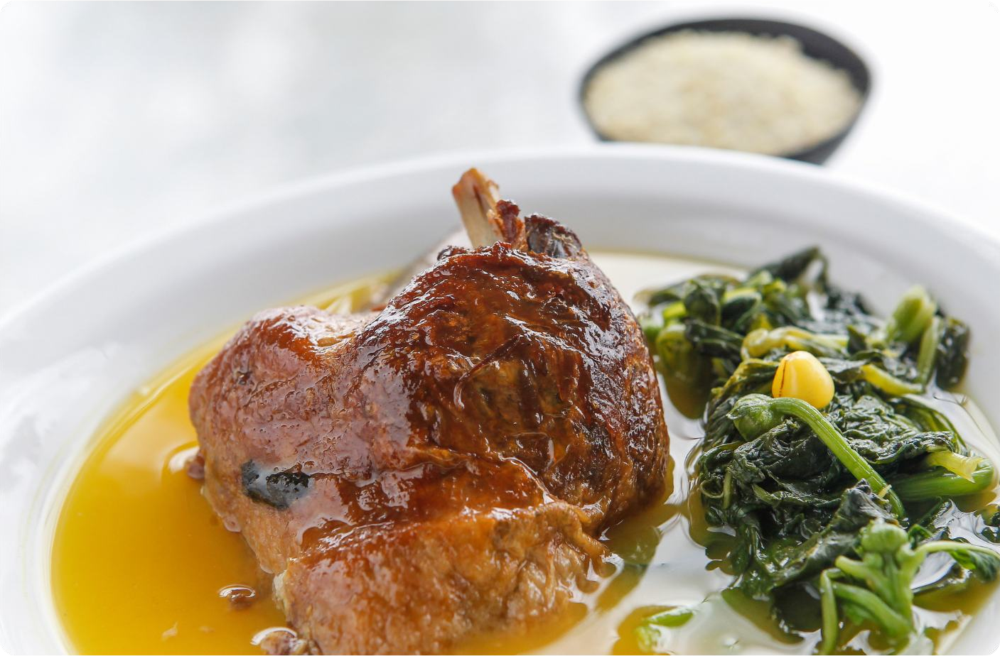
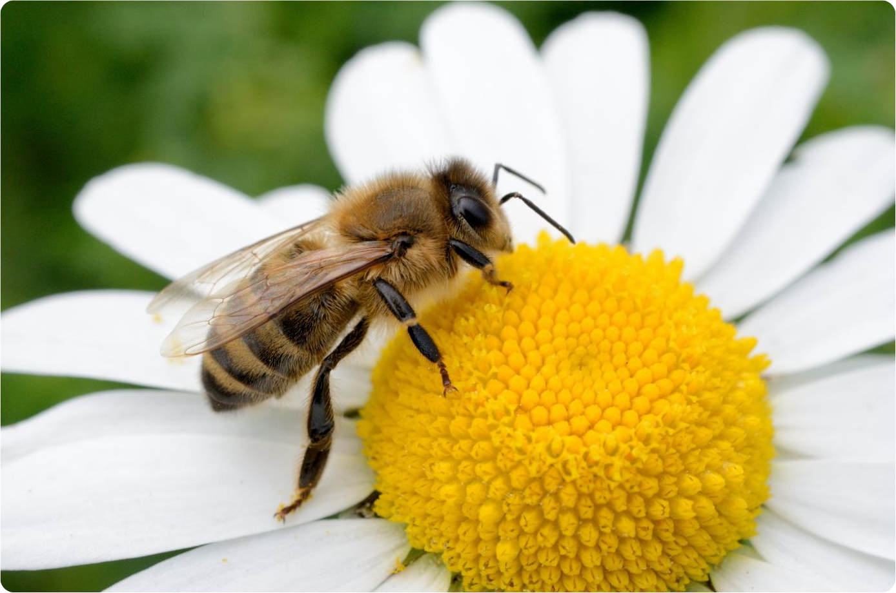
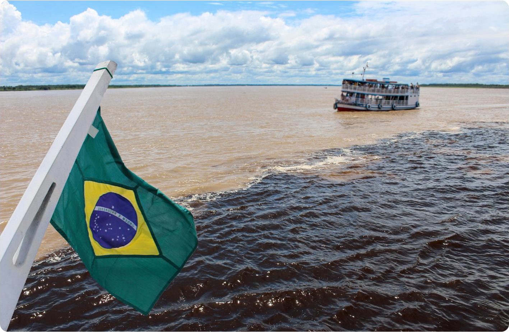
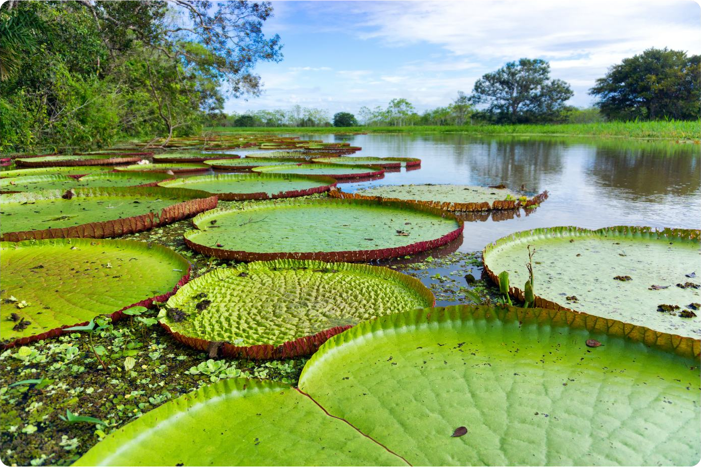
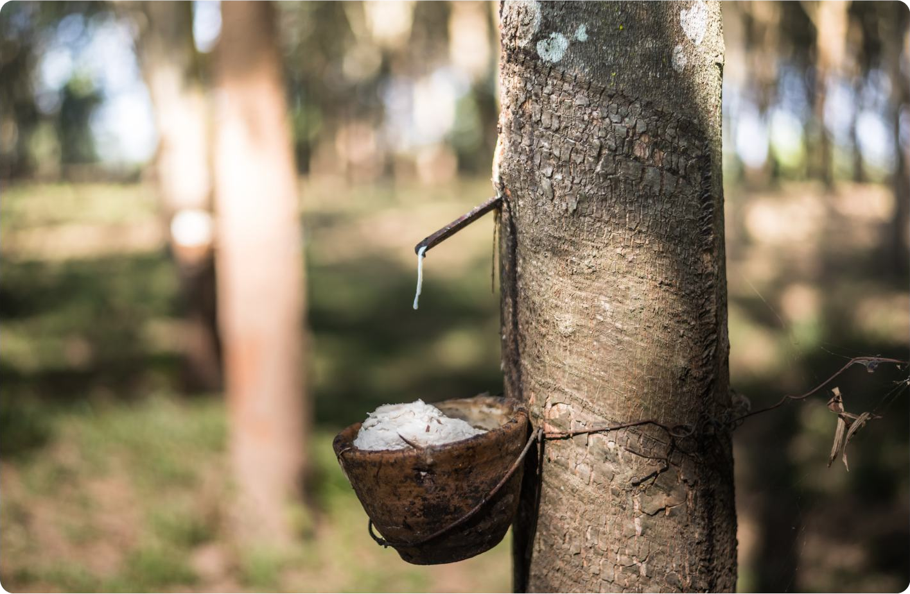

A Amazônia é a maior floresta tropical do mundo e uma das regiões mais importantes para o equilíbrio climático do planeta. Ela abriga cerca de 10% de todas as espécies conhecidas na Terra, além de milhares de plantas, peixes e insetos ainda pouco estudados. Seus rios formam a maior bacia hidrográfica do mundo e influenciam diretamente o clima e o regime de chuvas de diversos países da América do Sul.

O tucupi, símbolo da culinária paraense, vem do líquido da mandioca brava que é tóxico quando cru. Foram os povos indígenas que descobriram, há séculos, como ferver esse líquido por horas até virar um dos temperos mais amados da Amazônia.

O tucupi, símbolo da culinária paraense, vem do líquido da mandioca brava que é tóxico quando cru. Foram os povos indígenas que descobriram, há séculos, como ferver esse líquido por horas até virar um dos temperos mais amados da Amazônia.

Perto de Manaus, o Rio Negro e o Rio Solimões correm lado a lado por até 6 km sem se misturar. Isso acontece porque as águas têm cores, temperaturas e velocidades diferentes. O resultado é um dos espetáculos naturais mais famosos da Amazônia.

A vitória-régia, a folha gigante que flutua nos rios e lagos da Amazônia, nasceu, segundo a lenda, de uma jovem indígena chamada Naiá. Apaixonada pela lua, ela tentou alcançá-la na água e foi transformada na flor que hoje encanta quem visita a região.

No auge do ciclo da borracha, o látex extraído das seringueiras da Amazônia valia tanto quanto ouro. Foi esse dinheiro que construiu teatros, avenidas e prédios luxuosos em Belém, dando à cidade um charme europeu que existe até hoje.
